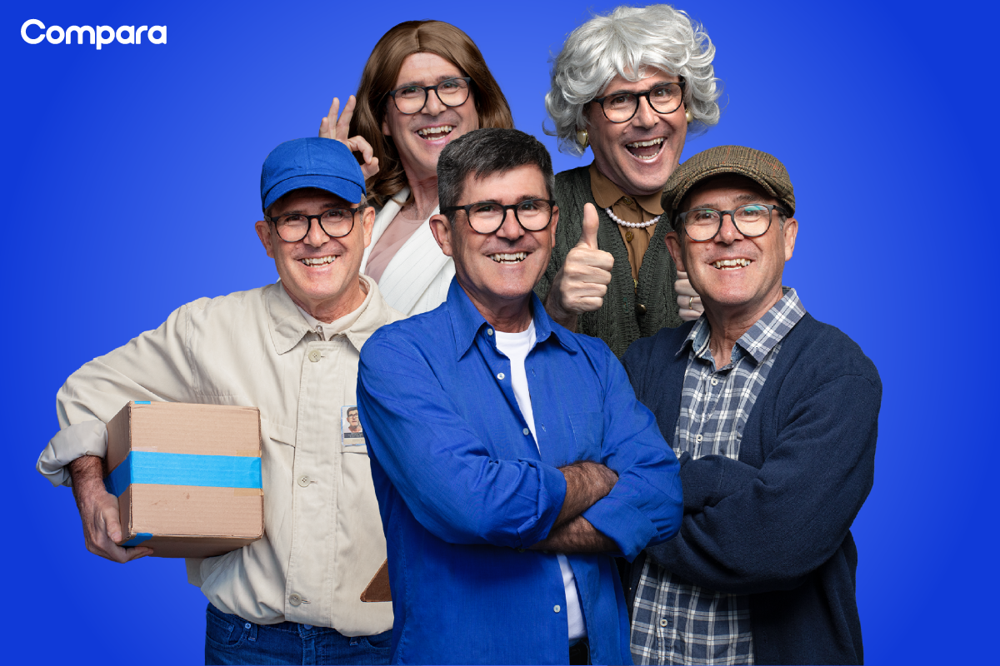
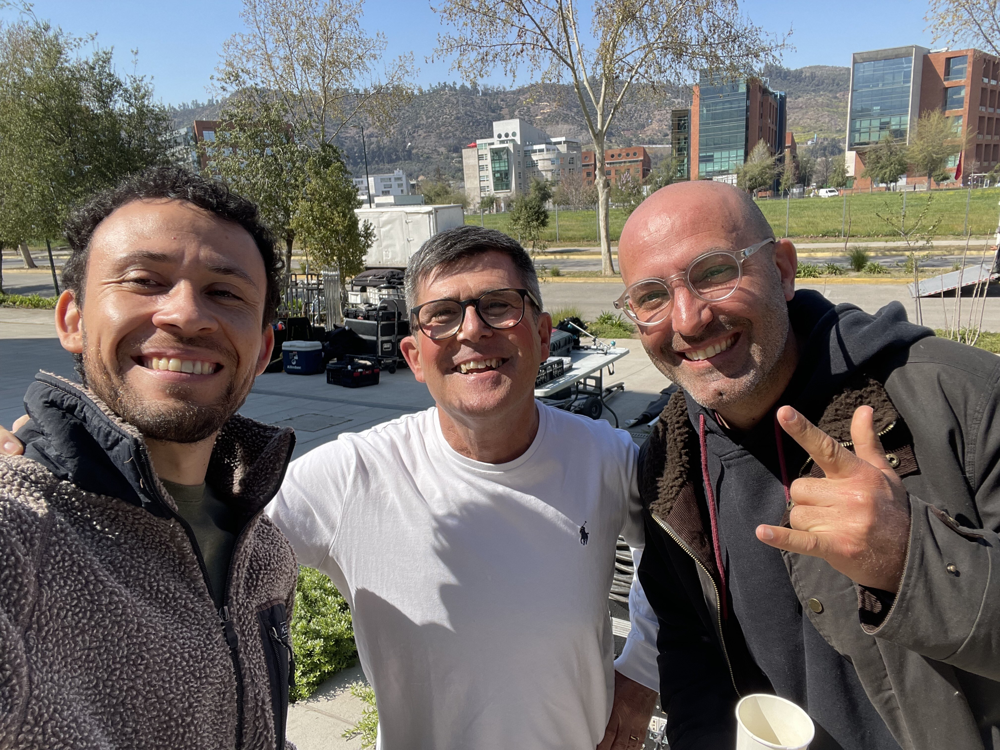
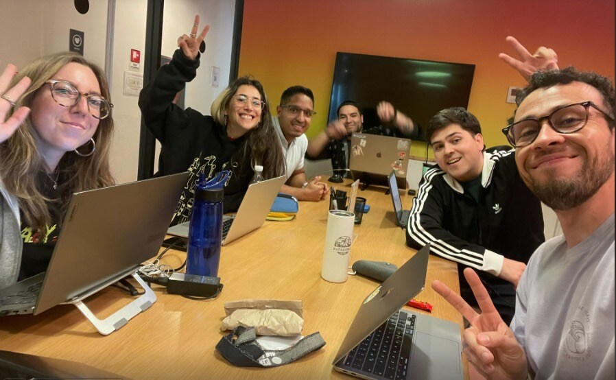
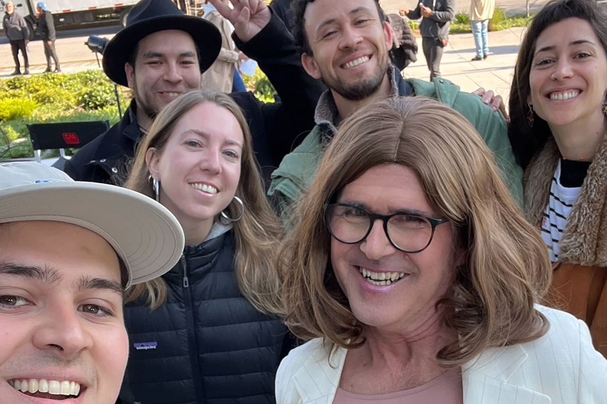

Comparini Compara, marca registrada
Mentira, no es marca registrada, pero queda muy bien, ¿o no?
Mentira, no es marca registrada, pero queda muy bien, ¿o no?

¿Cómo surge?, ¿qué hay detrás de esto?, ¿de quién fue la idea? ¿Comparini puede ser mi tío?
Todas estas preguntas tienen su respuesta a continuación, excepto la última que la estamos averiguando.
Todo empezó hace varios meses atrás, queriendo posicionar a Compara en los medios masivos con una presencia nunca antes vista para nosotros. ¿El objetivo? Que todas las personas que no estaban comparando al contratar su seguro (algo tan intrínseco al ser humano), lo comenzaran a hacer con nosotros. La pregunta era cómo hacerlo, pues las ganas e ideas no faltaban.
Nuestro CEO, Sebastián Valín, tuvo una idea increíble. Era remontar una acción que ya se había hecho en Compara hace aproximadamente 12 años y trabajar codo a codo con las aseguradoras para poder salir en grande. ¿Qué podía salir mal? No lo pensamos, siempre supimos que lo lograríamos. ¿Quieren saber en detalle el plan? Se la contamos en otro post, ahora hay mucho para decir y poco tiempo.

Tuvimos que elegir una agencia creativa, no fue fácil, todas eran muy buenas. Al final nos quedamos con la que nos presentó una idea que era difícil de superar y que nunca se nos había ocurrido (gracias a nuestros amigos de RAYA por eso).
Comparini - Compara. Una genialidad, ¿no?

Cuando le contamos la idea a Marcelo, con un cafecito de por medio, le gustó y rápidamente nos dijo que sí. De ahí empezó nuestra cuenta regresiva. Todo debía producirse en septiembre, mes de las Fiestas Patrias. Pero, repetimos, sabíamos que lo lograríamos.
El equipo de Brand de Compara estaba casi en su totalidad en Santiago de Chile, pero faltaba una integrante, Dana, que como decimos acá estaba “Around the world”. La trajimos a las tierras del pisco y los completos para poder trabajar en la semana más intensa. Le preguntamos primero, ¿qué se siente traspasar la virtualidad y venir a realizar una producción tan grande?
Realmente la variabilidad de sentimientos fue muy grande, desde saber que iba a conocer a mis compañeros hasta grabar un comercial con Comparini. Todo decía que iba a ser una semana muy prometedora

Este brazo de marketing se pasó una semana durmiendo, comiendo, trabajando, pensando únicamente en “Comparini, compara”. Gracias por tanto chicos, valoramos su trabajo.
“El eslogan de la publicidad se metió tanto en nuestras vidas que ya nada de lo que habláramos podía estar por fuera de eso. Elegíamos los cambios de vestuario de Marcelo y nos reímos de imaginar lo que iba a producirse el día del rodaje”.
Ahora vamos a lo importante, Dana, ¿por qué todas las personas quieren que Comparini sea su tío?
Jajaj eso es algo que surgió después de conocerlo en el rodaje, es una broma que hacíamos porque Marcelo es realmente muy amoroso, carismático y simple. Lo queríamos adoptar

Luego de una gran semana de trabajo, previo a las Fiestas Patrias, se logró materializar un comercial que dará vueltas por todos lados y si no lo vieron pueden hacerlo acá.
Posicionarnos dentro de la TV abierta y de la mano de Marcelo Comparini es realmente un sueño, desde la idea hasta la circulación de este nuevo spot. Con un toque de humor, busca provocar en las personas la necesidad de Comparini...ejem, digo, de “comparar”, como primer paso ante cualquier decisión importante.
Si estos temas de publicidad, seguros y demás cositas, les interesan, no se pierdan nuestro próximo post. Porque digamos la verdad, no es fácil vender cuidados, es decir, seguros.
En Compara amamos los desafíos y la creatividad, esperamos que ustedes también.
Nos leemos en el próximo post.
 Actualidad
ActualidadEl recordado programa noventero “Venga Conmigo” marcó a toda una generación en Chile. Su exitoso segmento “Corazones Service” se transformó…
 Actualidad
ActualidadHace aproximadamente 2 meses comenzamos con el cierre de lo que empezó en julio como el “Compariniverse”.
 Actualidad
ActualidadHace unos meses lanzamos Compariniverse: la primera campaña en Chile protagonizada por una celebridad completamente clonada con IA.